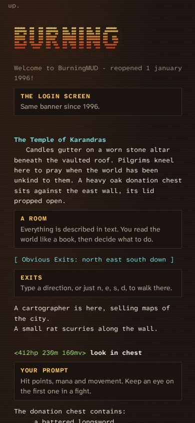
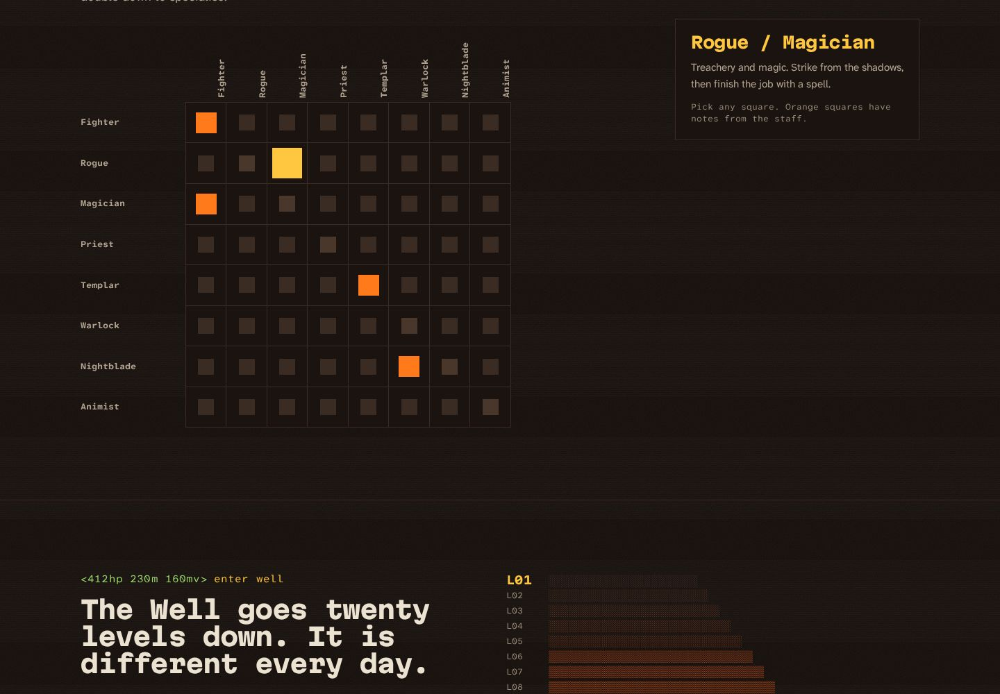
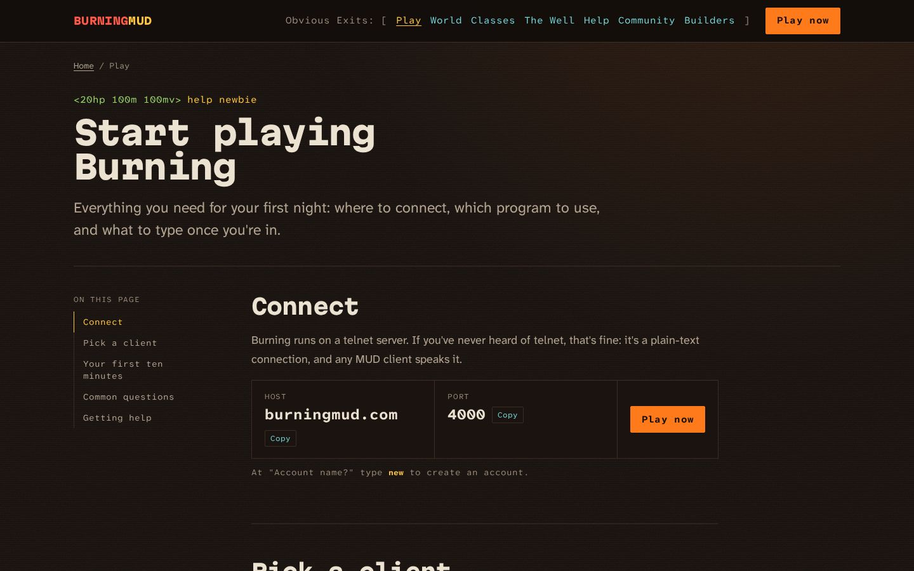
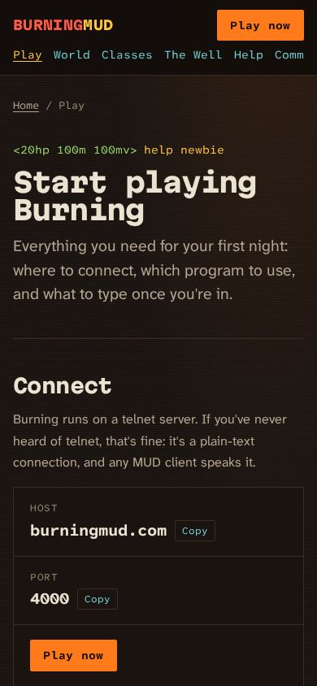

Findings from the live site, thirty years of archive.org captures, today's code and a 2008 server backup, then a plan and two high-fidelity comps for a site that gets new players connected.
Prepared 27 October 2026 as a proposal for Bane, who maintains the current site. Nothing on the live site, DNS or hosting was changed.
Summary
What Burning is: a free text-based multiplayer fantasy game (a MUD), running continuously since 1 January 1996 from a DikuMUD lineage that goes back to about 1990. The game is live right now at burningmud.com port 4000.
The current site has good raw material: real feature copy, a new-player FAQ, a client list, Stryder's continent maps, builders' docs and a mirror of a beloved player site.
It does a poor job of turning a visitor into a player. The homepage is an ASCII logo, a typing animation and one button. Several internal links are broken. The site can't be zoomed on a phone. Every page loads a 2 MB background image.
The domain setup works against search: burningmud.com redirects to burningmud.github.io, so the brand domain never ranks.
The recommendation: rebuild in Astro on the same GitHub repo and free hosting. Lead with what playing actually looks like (an annotated session) and put a working Connect action on every page. Bring back the 2006 class and race pages.
>look
Live site review
I crawled every page reachable from the navigation and checked every link (247 references). The live site is a Jekyll build of the main branch, served by GitHub Pages.
How the domains route today
Address
What happens
burningmud.com
An nginx on the game server (AWS, Ireland) returns a 301 to burningmud.github.io. The same host answers telnet on port 4000.
www.burningmud.com
A Cloudflare 301 to burningmud.org.
burningmud.org
Cloudflare-proxied copy of the GitHub Pages site (200).
burningmud.com:4000
Live. The 1996 login banner with the implementors Stile, Bane, Blase and Stryder.
Mail
Google Workspace (MX on aspmx.l.google.com).
Pages
Page
Content
Works / fails
/
ASCII logo loaded by fetch(), a four-line typewriter poem ("Out of the burning ashes…"), a glowing green PLAY button, a "Vote" link.
No explanation of what the game is. The poem is empty until the script types it, so screen readers and crawlers miss it.
/play
Telnet link, client list (Mudlet, zMUD, CMUD, PuTTY, TinyFugue, TinTin++, JuiceSSH), Windows telnet help.
Best page on the site. The Community link is wrong (/community.markdown).
/about
Data-driven accordion: pitch, "What is a MUD?", why play, features.
The strongest copy is hidden in collapsed panels. It has its own <head> and <body> inside the page body.
/help
Support info and a thorough new-player FAQ.
Two links to /player_sites.markdown return 404.
/maps/
Links to the Orhan and Ashinara maps and the Karandras city maps.
Maps open as raw image files. The page spells it "Ohran" while the map itself says "Orhan".
/community
Player sites (Cindy, Ozrak, Moe), the Cindy mirror, trigger sets (Uzi, DSPublic).
All external links answer 200.
/documentation
OLC intro, links to the OLC reference and the mobprogs docs.
The "build a zone" form is a goo.gl link, and goo.gl now returns 404.
/vote.html
The MUD Connector and MUD Verse vote buttons.
Works. MUD Verse is plain http.
404
"Dead End… a dark and unadorned room."
Nice in-world copy; keep it.
Brand, look and tech
Marks: the ASCII "BURNING" logo from the telnet banner; "Obvious Exits: [ … ]" as the nav label; the "burning ashes" tagline (in use since 2006).
Look: the jekyll-theme-midnight theme with the Orhan map behind a 70% black overlay, Inconsolata, darkorange headings and #8b0000 text. That dark red on near-black is about 1.9:1 contrast.
Tech: Jekyll 3.10, jQuery 1.12.4 (2016), respond.js and IE 8 shims, and jekyll-feed producing an empty feed.
Mobile:user-scalable=no blocks pinch zoom, which fails WCAG 1.4.4. The nav is one long centred line, and the terminal block is fixed at 50% width.
Speed: the HTML is only about 8 KB, but every page pulls the 1.99 MB Orhan JPEG as its background, plus jQuery and a Google Font.
SEO: the canonical URL is written as burningmud.github.io/ with no scheme, which makes it a relative URL. Every page has the same description ("Burning MUD Homepage"). There's no robots.txt, sitemap or favicon. Links end in .markdown and resolve to 404s.
Accessibility: the nav sits in an invalid <h7>, the about panels are buttons with no expanded state, and images lack alt text.
>history
Thirty years on archive.org
The Wayback CDX API lists 435 unique captures for burningmud.org (2002–2022) and 207 for burningmud.com (2002–2025). I pulled 42 representative captures. The archive rate-limited me partway through, so the class, race and spell sub-pages were sampled, not read in full.
Years
Site
Brand and message
2002–05
Frames site on burningmud.org, hosted at a Swedish university
Big ASCII art. Pages for classes, races, per-class spells, gods, areas, a newbie guide and the multiclass guide (16 combinations then). Telnet set up through Netscape preferences.
2006–08
PHP and MySQL rebuild
Nav: News, Races, Classes, Features, Help files, Play, Who's playing, Highscore, Immortals, Boards, Log in. The tagline arrives. FAQ: "we focus on hack'n'slash fun with a welcoming community feel." A roster of 30-odd immortals by department.
2008
Same site, moves to burningmud.com
The .org registration lapsed and a squatter took it. burningmud.com became home.
2010–11
Google Sites stopgap
Server-move notices signed by Blase: "We ARE UP!"
2013
phpBB3 forum
The forum outlived the site, briefly.
2015–18
One-page static site
"obvious exits; [ BurningMud | how to | about ]". The 2018 About copy is the ancestor of today's.
2022–26
GitHub Pages (current)
Jekyll, the typewriter homepage, docs and the Cindy mirror.
Worth bringing back
Class and race pages (2006): each class had flavour text and a level-by-level skill and spell table, and each race had stat modifiers (Troll: Str +2, Dex −3). This is the deepest content Burning ever had on the web, and new players want it.
The 2006 features list: auction, item store, navigators, guides, spirits, altars, hunting, arena, Temple Cities, meta shop, room spells. It's a ready-made "what's in the game" index.
Who's playing and high scores: these were live from the game database in 2006. This is the strongest proof of life a MUD site can show.
The immortal roster by department: builders, coders, player relations, questing, balance. It shows real people run the place.
News: even a short changelog answers "is this still alive?"
>stat repo
The code
Two sources: the public GitHub repo that holds today's site, and a full server backup from 30 December 2008 that Jim kept. From the backup I read only the website files and the game's text files; the player and forum databases stay offline.
The 2008 server backup
Archive
What's in it
web-1.tar.gz
The 2006–08 PHP site by Moralis (2,843 files), with a phpBB board, the Cindy and Moe player pages, CSS and the original BURNING.jpg and logo-1.gif. The PHP itself builds SQL from raw query strings, so revive ideas from it, not code.
Burning-20081228.tar.gz
The game as checked out from SVN: src/ (C source and about 40 utilities such as showcombo.c, topquests.c, sqlimportpfile.c) and lib/ (help, news, MOTD, credits, socials, guides, world files).
svn dumps, repos
Full Subversion history (two dumps, about 44 MB).
Ideas worth mining
The real colour convention. The game's own text writes the name as &+rBurning &+yMUD: Burning in red, MUD in yellow, commands in yellow. The comps' wordmark now follows it.
501 help entries (lib/text/help_table, 12,452 lines). They can feed a searchable web help browser that stays in sync with the game, which Moralis listed as "Helpfile browser / search / autolink" in his TODO.
A half-built player site. The 2006 TODO marks these as built but untested: account login, web mudmail, whois lookups, character and email privacy toggles, mercenary visibility, online page editing, and a typo/idea/bug tracker fed from the game. Still on the idea list: a voting interface, monthly polls, the "Official BurningMUD Times" and a redesign.
Live data, already modelled. "Who's online" read a who2html table. High scores ranked level, reputation, deaths, K'ta'viir stats trained, quests completed and character age, filterable by class. News lived in a newsItems table with an RSS generator. A small nightly JSON export of the same data would give the static site its proof of life.
New-player features to check. In 2008 every new character got a spirit guide until level 7 (ask spirit tour), plus an Elder channel for questions (etell). If these still exist they belong on the Play page.
Credits.lib/text/credits lists the DIKU authors and every Burning builder and coder since 1996, which is ready-made content for an About page.
Today's site on GitHub
Item
Finding
Repo
BurningMUD/burningmud.github.io, the only repo in the BurningMUD org. 397 commits on main, nearly all by Bane (Dec 2022 to May 2024), plus one update on 30 Apr 2026.
Branches
Pages builds main. The default branch is master, which holds one "test page" commit. dev-001 has an unmerged Play page rewrite, map updates and a renamed community page.
Content model
_data/about_topics.yaml drives the About accordion. Carry the pattern over as Astro content collections.
Docs
Thorough mobprog (63 KB) and OLC references in Markdown.
Clutter
A committed vim swap file, the default Jekyll post, a 2.4 MB Ashinara JPEG served at full size, an unused AI-looking river illustration, and directory indexes saved eight times over in the Cindy mirror.
>score
Positioning and audience
Primary audience: people who have never played Burning (Jim's call). They arrive from MUD listing sites, search or a friend, and give the page under a minute. Many have never installed a MUD client.
One line: a free fantasy world made of words, open since 1996, built for big cooperative fights.
What no other MUD can honestly claim: the 1996 login screen that's still running; 64 dual-class pairs; the Well, 20 procedurally generated levels that change daily and drop essence that changes your race; raids of 50; two continents and 400+ areas; characters never deleted.
Secondary audiences, one click deep: current players (maps, help, community tools), lapsed players from the 2000s checking whether it's still up, and builders (OLC and mobprog docs).
>exits
Information architecture
Seven top-level exits. The nav keeps the "Obvious Exits" label. A Play button is fixed in the header on every page.
/ Home: annotated session, what a MUD is, world, classes, the Well, community, connect
/play Start playing: connect, pick a client, your first ten minutes, FAQ, getting help
/world Orhan and Ashinara maps (zoomable), Temple Cities, area index
/world/karandras The starting city, both sides of the in-game map
/classes The 8 classes and the 8 × 8 dual-class matrix ← restored from 2006
/classes/[class] Flavour, skill and spell table by level ← restored/races 12 races with stat modifiers ← restored/well How the Well works, essence and race change
/help FAQ, in-game help categories, support
/community Player sites, trigger sets, the Cindy archive, vote
/community/staff Immortals by department ← restored
/archive/cindy/… The mirror, unchanged URLs
/builders OLC guide, command reference, mobprogs, apply to build
/news Short changelog and event notices (Markdown files)
/404 "Dead End. You have entered a dark and unadorned room."
Redirects: every old .markdown, .html and player_sites URL goes to its new home, so nothing in old forum posts or MUD lists dies.
>inventory
Content: keep, rewrite, cut
Do
What
Keep
The feature copy from about_topics.yaml, the FAQ in help.markdown, the client list, OLC and mobprog docs, the 404 copy, the "Obvious Exits" nav, the tagline (moved off the homepage into About), Stryder's maps, the Cindy mirror.
Rewrite
The homepage (it explains nothing today). About, out of accordions into a plain readable page. The Help FAQ, split into a new-player guide (/play) and a reference (/help). Maps, into a zoomable viewer with alt text. Every page title and description.
Restore
Class, race, features and staff pages from the 2006 site, checked against the game today.
Cut
The typewriter effect, jQuery and IE shims, the Jekyll welcome post, the swap file, the unused river illustration, the dead goo.gl form link (replace with an email or a GitHub issue form), the eight duplicate directory indexes in the mirror.
>look self
Visual direction: a live session, annotated
The page is a play session. The homepage opens with the real 1996 login banner, a room, a fight and the prompt line. Margin notes explain each line to a newcomer: "This is a room." "That's your prompt." Every section opens with the command that would print it (help mud, areas, enter well). This shows a stranger what playing looks like in the first ten seconds, and it avoids both the painted-fantasy MMO page and the green-on-black hacker terminal.
Colour: the ANSI roles a MUD client really shows
Ember black ground
Bone descriptions
Cyan rooms, exits, links
Ember Burning, actions
Flame gossip, focus
Blood damage
Moss prompt, heals
Type, grid, imagery, motion
Type: Atkinson Hyperlegible Mono for game output, Atkinson Hyperlegible Next for plain explanation, Martian Mono (wide, heavy) for headlines. The Atkinson faces were drawn for low-vision readers, which matters for an audience that includes many screen-reader and magnifier users.
Grid: a session column about 46 rem wide with a 17 rem notes rail; sections on a 1240 px frame; box-drawing rules instead of rounded cards.
Texture: a faint scanline and warm noise over the ground, plus an ember glow at the top of the page (Jim's page floor).
Imagery: Stryder's continent maps are the only illustrations. Shade characters (░▒▓█) draw the Well's depth chart. No stock fantasy art.
Motion: one blinking caret on the command line, and notes that light their line on hover or focus. All of it is off under reduced motion, and nothing is hidden waiting for an animation.
>show comps
Comps
Both comps are working HTML: tabs, copy buttons and the class matrix all respond. They were rendered at 1440 and 390 px wide with no horizontal scroll, and both passed Impeccable's detector after contrast fixes. Session text and player names in the comp are made up and labelled as such.
The annotated session, with notes beside the lines they explain

Phone: notes become callouts

The dual-class matrix and the Well's depth chart
Inner page: Start playing

Desktop

Phone
>stat host
Stack and hosting
Astro, static output, on GitHub Pages from the same repo (Jim's pick, open to your view). Content stays in Markdown and YAML, so Bane's docs and data files move over almost unchanged. It ships zero JavaScript by default, with small islands for the class matrix, tabs and map zoom. A GitHub Action builds and deploys on every push to main.
Canonical domain: www.burningmud.com. The apex has to stay on the game server, because players telnet to burningmud.com:4000 and an HTTP proxy can't carry that. So point www at GitHub Pages (custom domain with HTTPS), change the apex nginx 301 to https://www.burningmud.com, and send burningmud.org there too. One canonical address, and the brand domain finally ranks.
Cost: hosting $0 (GitHub Pages). Domains run about $10–11 a year each at Cloudflare's at-cost pricing, for .com, .org and .net. The game server's AWS bill is separate and unknown to me.
Later, optional: a play-in-browser client and a live player count. Both need a small service on the game server (a websocket-to-telnet bridge, and a JSON "who" export), so they're for the game team to decide.
>score site
SEO, performance and accessibility targets
Area
Target
Weight
Under 150 KB on the homepage before the map image. Maps lazy-loaded as AVIF/WebP at 1400 px with the full-size file a click away (today: 2 MB on every page).
Core Web Vitals
LCP under 1.5 s on 4G, CLS under 0.05, INP under 100 ms. Lighthouse 95+ in all four categories.
Search
A unique title and description per page; canonical https://www.burningmud.com/…; sitemap.xml and robots.txt; Open Graph image drawn from the ASCII logo; VideoGame JSON-LD with genre, free price and the play URL; 301s for every old URL.
Phrases
"free MUD", "text MMO", "DikuMUD", "fantasy MUD since 1996", "MUD for beginners", plus class and area names.
Accessibility
WCAG 2.2 AA: zoom allowed, 4.5:1 text contrast (the comps' faint grey was raised to 5.8:1), keyboard tabs and matrix, visible focus, real headings, alt text on maps, reduced-motion respected, no content behind animation.
>quest list
Build plan
Now
Quick fixes on the current site
Fix the .markdown and player_sites links, remove user-scalable=no, fix the canonical URL, add a favicon, replace the goo.gl link, switch the default branch to main, delete the swap file. About an hour of Bane's time, and it helps right away.
Phase 1
Foundation, Home and Play
Astro scaffold, design tokens, header and footer, the homepage and Play page from these comps, a GitHub Actions deploy, redirects. Ship it in place of the current home and play pages.
Phase 2
Move existing content
About, Help, Maps (zoom viewer), Community, Builders docs and the Cindy archive at stable URLs. Then switch the canonical domain to www.burningmud.com.
Phase 3
Restore the deep pages
Classes, races, the dual-class matrix, features, staff and news, rebuilt from the 2006 pages and checked against the game.
Phase 4
Proof of life (optional)
A live "who's online" count and a browser play client, if the game team adds the small services they need on the game server.
>tell jim
Questions for you, Bane
Do you like it? The direction, the homepage, the Start playing page. What would you change?
Astro or Jekyll? The plan assumes you'd build it in your repo with Astro. Would you rather keep Jekyll and take only the design?
Facts to confirm. Are there still 8 classes, called "Magician" (as in the 2008 code) or "Mage"? Do new players still get a spirit guide and the Elder channel? Is the race list the same 12 as in 2006? Are the Well numbers (20 levels, 6,000+ rooms, daily reshaping) still true? Which staff should be listed publicly?
Domain. The plan suggests www.burningmud.com for the site, with the bare domain staying on the game server for port 4000, and burningmud.org redirecting. Does that work for you?
Content. Could the staff supply a real (anonymised) session log to replace the made-up one, a short news history, and current class and race tables?
Live data. Would the game team export a nightly JSON of who's online, high scores, news and the help table, or add a websocket bridge so people can play in the browser?
Analytics. Cookie-free Cloudflare Web Analytics, or no tracking at all?